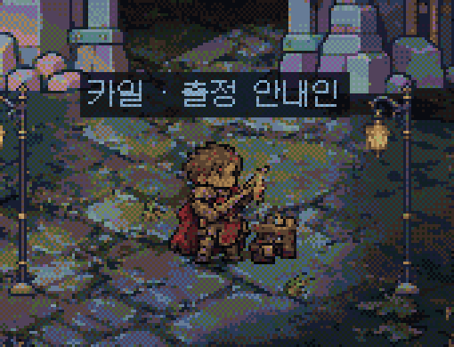

Tracefolio REPORTS & ISSUES
Tracefolio REPORTS & ISSUES 캠프 가디언작업 결과
캠프 가디언작업 결과카일 스프라이트 과도한 외곽선 수정
검증 대기흰 테두리를 남청색으로 덧칠하던 전용 처리를 제거하고 카일72프레임·호버 외곽선·조명 베이크를 갱신했습니다.
작업 결과
구현·출력 저장·정규화·Godot 임포트·실제 OpenGL 렌더 확인 완료. EXE 빌드/게임 배포 미실행.
변경 내용
적용 내용
clean-gate-matte.py는 원본 셀 외부와 연결된 흰 매트를 투명화하고 원래 자연스러운 윤곽을 보존합니다. 기존 원본/v5/v6키는 유지하며 새 키를art/source/town-professions-v7에 저장했습니다. v5출력기의 gate 전용 남청색 덧칠을 제거했습니다. 보간기에 --only/--key-source,베이크기에 --npc를 추가하여 카일만 재생성했습니다. 카일72자세/호버외곽선/노멀/해시·메타데이터·제작절차를 동기화했습니다.
검증
첫프레임 강제남청#171d32 픽셀285→0.72프레임/고유69자세/발고정 픽셀차이0.변경PNG3개 정규화 및 Godot4.7.2 임포트 완료. 실제 GTX970/OpenGL 렌더36프레임,data_errors=[],normal_loaded=22.실제 게임 PNG에서 두꺼운 테두리 제거를 확인했습니다.별도테스트/전체회귀 미실행. 종료시 캡처콜백이 해제된 마을에 접근하는 오류가 있어 도구를 disconnect하도록 수정했으며 게임코드 오류와 구분합니다. 기존GL텍스처3개 해제경고/셰이더캐시권한경고도 남았습니다.

남은 사항
EXE 빌드·게임 배포 미실행.전체NPC/전체회귀 미실행.중앙보고 등록·푸시·배포·외부접근은 후속기록합니다.
작업 시간
- 제안 시간: 2026-11-17 20:18:55 KST 시작,5~8분 제안.
- 실제로 완료된 시간: 구현·실제렌더·기록 2026-11-17 20:23:46 KST,실측 292초.
- XERJ: 미사용 — rg·원본/출력대조·픽셀통계·Godot실제렌더